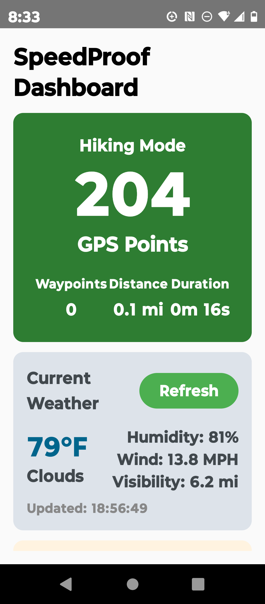
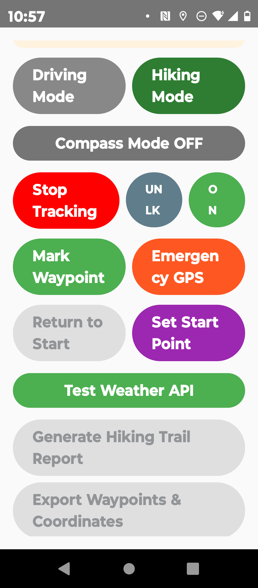
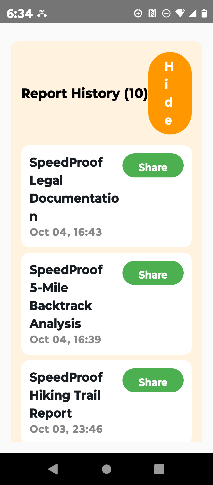
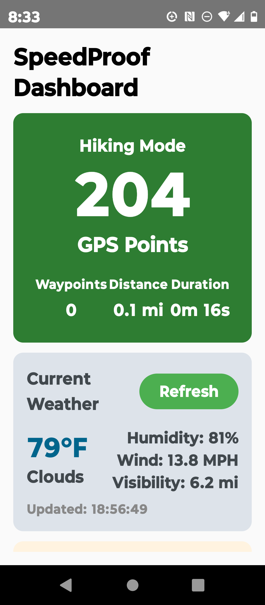
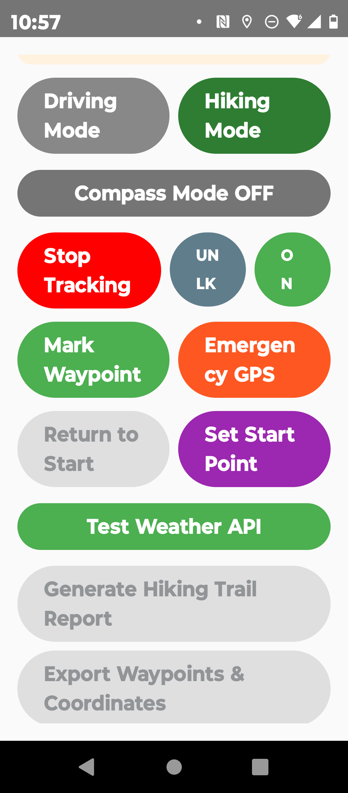
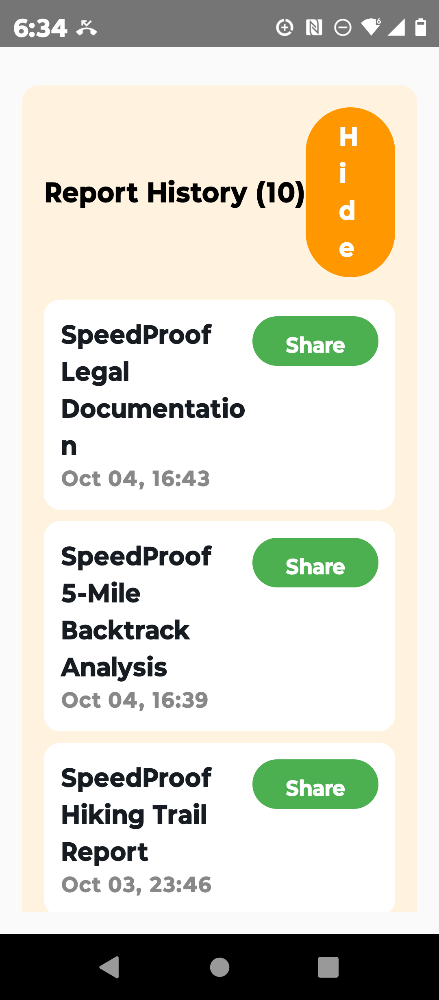

Transform uncertainty into certainty. Whether you're driving with backtrack enabled, hiking off-grid with compass precision, or managing a commercial fleet, SpeedProof delivers timestamped, precision-grade documentation you can trust.
?? Get SpeedProof Early - 1 Month Free
Track your motion with precision-whether you're driving with 5-mile backtrack, or walking, jogging, running, hiking with compass modeengaged.
SpeedProof delivers timestamped motion logs, instant validation, and trusted documentation for every move.
Opt in now for 1 month free, then just $4.99/month to stay sharp and protected.

 




